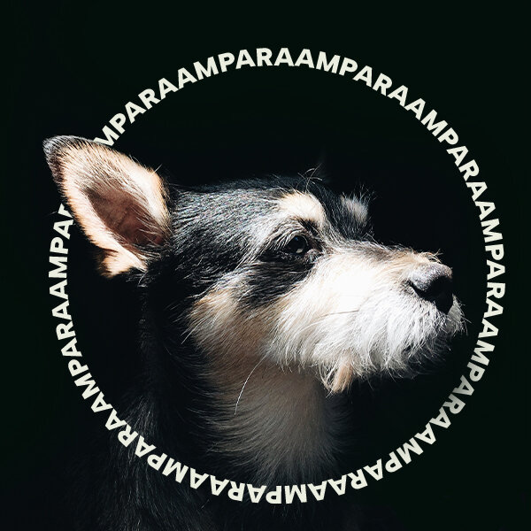

As ONGs de animais trabalham com o resgate deles, ou seja, com a retirada dos que estão em situação de risco nas ruas e com o processo de adoção desses mesmos animais, por pessoas que prometem oferecer a eles toda a segurança e proteção que precisam, operam totalmente com o dinheiro de doações ou de eventos, listado a baixo ongs que ajudam a manter o cuidado com os animais.
A OSCIP AMPARA Animal é uma instituição sem fins lucrativos que surgiu em agosto de 2010, formada por um grupo de mulheres que possuem um objetivo em comum: transformar a realidade em que vivem os cães e gatos rejeitados e abandonados, para que sejam tratados com amor, respeito e dignidade.
Desde 2003, a organização da sociedade civil de caráter socioambientalista ProAnima vem atuando através do trabalho voluntário, seguindo quatro eixos: Ativismo, Política Pública, Educação e Proteção. As ações e outros feitos da ProAnima são direcionadas às diferentes espécies de animais, sendo cães, gatos, cavalos, silvestres nativos e não nativos.
A ARCA Brasil - Associação Humanitária de Proteção e Bem-Estar Animal é uma uma entidade sem fins lucrativos, sem partidários ou religiosos, feita em 1993 com o objetivo de promover o bemestar de todos os animais.